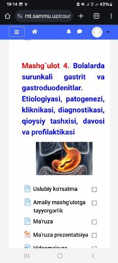

PBBolalarda surunkali gastrit va gastroenterologik kasalliklar bo'yicha amaliy mashg'ulot testlari.
Ushbu o'quv materialida bolalarda uchraydigan surunkali gastrit, gastroduodenit hamda o't yo'llari kasalliklariga oid amaliy mashg'ulot ko'rsatmalari va test savollari keltirilgan. Materialda kasalliklarning etiologiyasi, patogenezi, klinikasi va diagnostikasi bo'yicha savollar o'rin olgan.